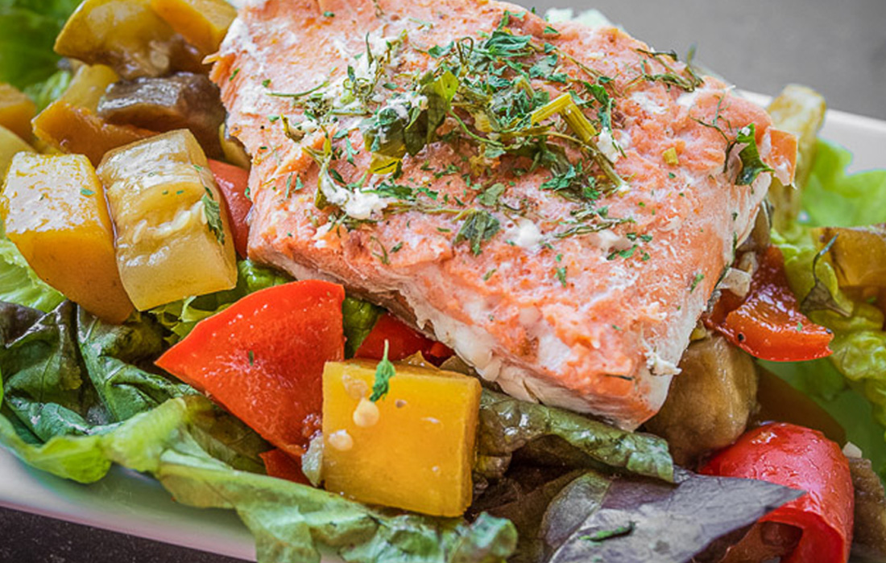

Roasted Vegetable Salad topped with Salmon

Description
A delicious nutrious salad. Made with all natural ingredients. No crap!
Ingredients
- 2 red peppers, cut into 1/2 inch pieces
- 1 medium eggplant, cut into 1/2 inch pieces
- 1 medium eggplant, cut into 1/2 inch pieces
- 1 1/2 cups butternut squash, peeled and cut into 1/2 inch pieces
- 2 tablespoons balsamic vinegar
- 1 teaspoon Coconut Aminos
- 3 cloves garlic, minced
- black pepper, to taste
- 8 ounces wild-caught salmon (see note)
- 1/8 teaspoon garlic powder
- 12 cups mixed greens
Steps
- Preheat oven to 375 degrees F.
- Toss vegetables with vinegar, Braggs, garlic and black pepper and place on a large parchment-lined or lightly-oiled
baking pan. Cover with foil and bake for 30 minutes or until vegetables are tender, stirring occasionally.
- Cut salmon into 4 pieces. Season with garlic powder and black pepper. Place salmon, skin side down on a non-stick
baking sheet. Bake at 375 degrees F until salmon is cooked through, about 12-15 minutes.
- Place mixed greens on serving plates. Top with roasted vegetables and salmon.